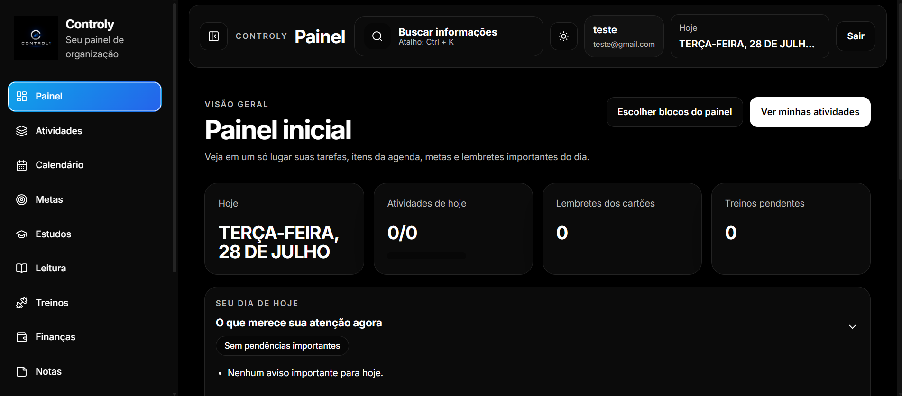
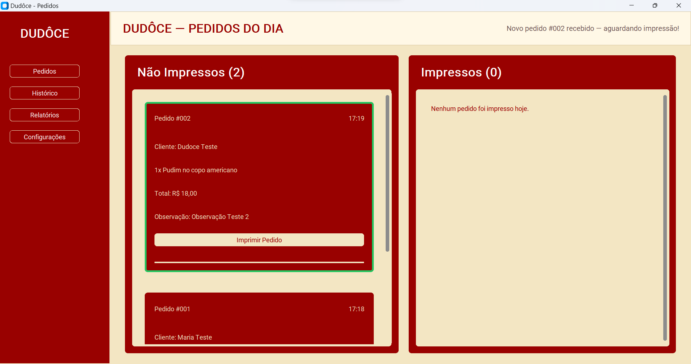
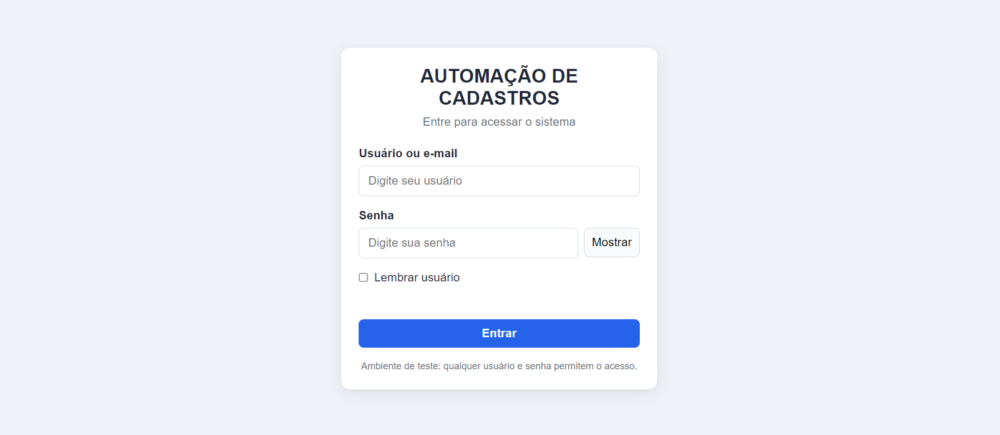
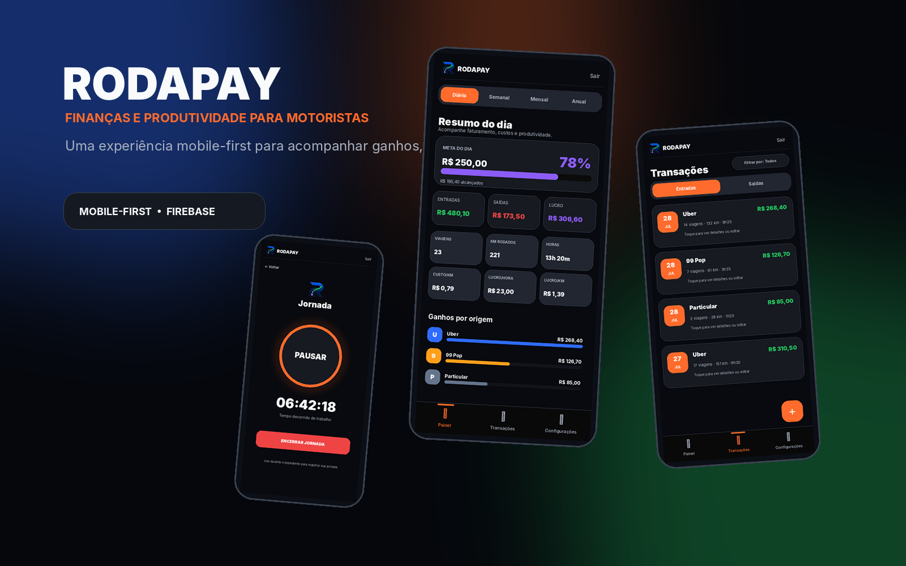
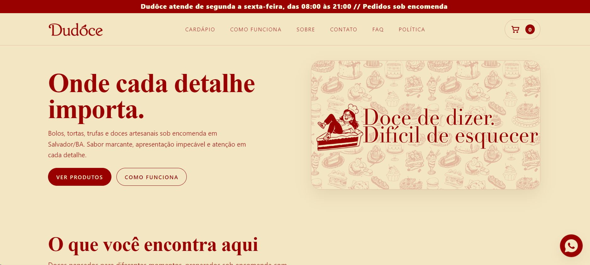
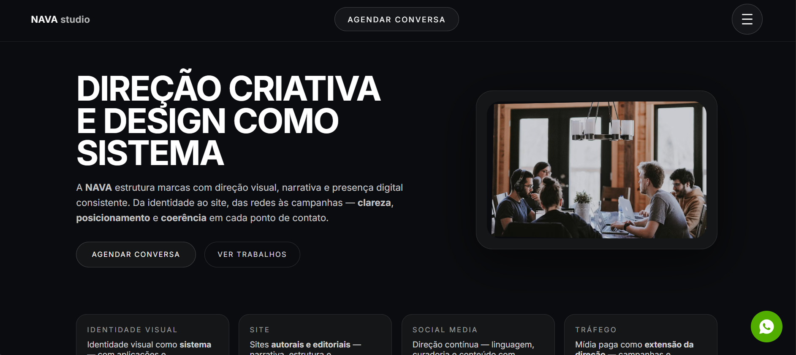
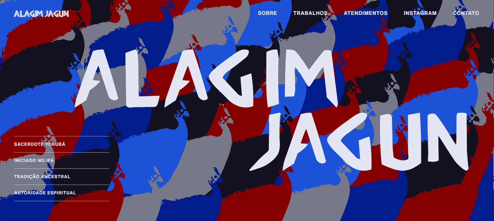
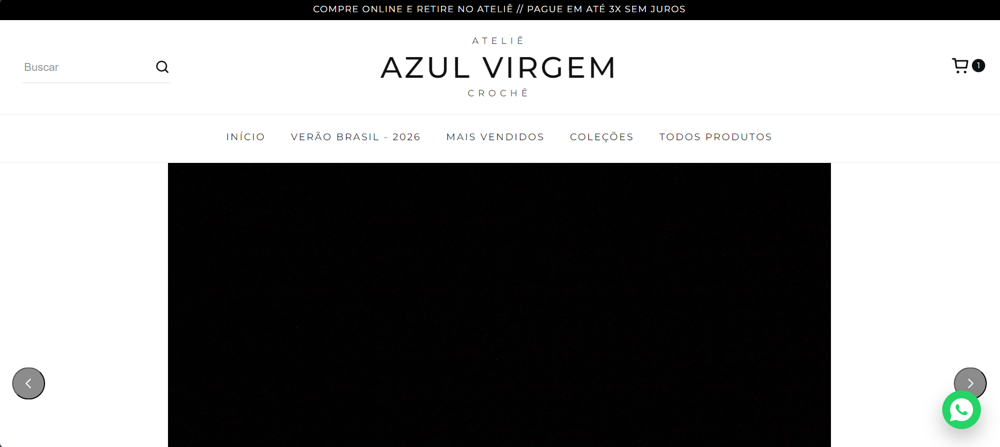
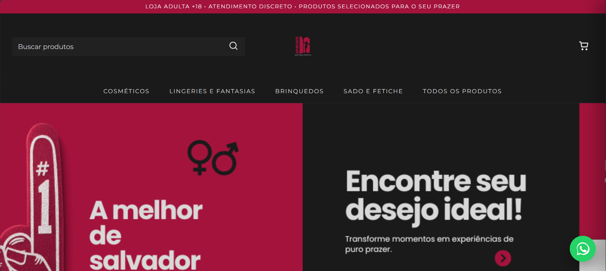

PYTHON, AUTOMAÇÃO E SISTEMAS
Sistemas, automações e lógica com Python.
Arraste para o lado e veja mais projetos.



ANDREI RODRIGUES · DESENVOLVEDOR FRONT-END E PYTHON
Crio sites, aplicações web, automações e sistemas desktop para empresas, profissionais e produtos digitais.
Desenvolvo experiências digitais que unem apresentação profissional, usabilidade e código.
Com HTML, CSS, JavaScript, Firebase e Python, construo desde sites e aplicações web até automações e sistemas desktop.
Cada projeto é pensado para funcionar em uso real, ser testável e continuar evoluindo.
DESENVOLVIMENTO WEB E PYTHON
Transformo necessidades em interfaces responsivas e fluxos funcionais, cuidando da estrutura, da navegação e dos detalhes que tornam o projeto claro para o usuário.
Também desenvolvo soluções em Python com integrações, regras de negócio, impressão, relatórios e automações para simplificar processos.
Ver projetos em funcionamento →PROCESSO DE DESENVOLVIMENTO
Um processo direto para entender, estruturar, desenvolver, testar e evoluir cada solução.
Começo identificando o problema, o público e o resultado esperado. Isso ajuda a definir prioridades e evita desenvolver funcionalidades sem um objetivo claro.
Organizo os fluxos, o conteúdo, a navegação e os componentes para que a experiência seja clara e funcione bem em diferentes telas.
Transformo a solução em código, separando responsabilidades, validações, integrações e regras de negócio para facilitar a manutenção.
Valido os fluxos, testo a responsividade, corrijo erros, publico uma versão funcional e continuo melhorando o projeto.
TECNOLOGIAS E COMPETÊNCIAS
Toque em uma habilidade para ver como aplico no projeto.
Aplicações web e sistemas Python apresentados com demonstrações, estudos de caso e repositórios.
PROJETOS E SOLUÇÕES
Arraste para o lado e veja mais projetos.







PYTHON, AUTOMAÇÃO E SISTEMAS
Arraste para o lado e veja mais projetos.


ABERTO A OPORTUNIDADES E PROJETOS
Estou disponível para oportunidades em desenvolvimento front-end e Python, além de projetos para empresas, profissionais e produtos digitais.